Mizumaki
Mizumaki · Fukuoka
Mizumaki
Highlighted on the Fukuoka map.
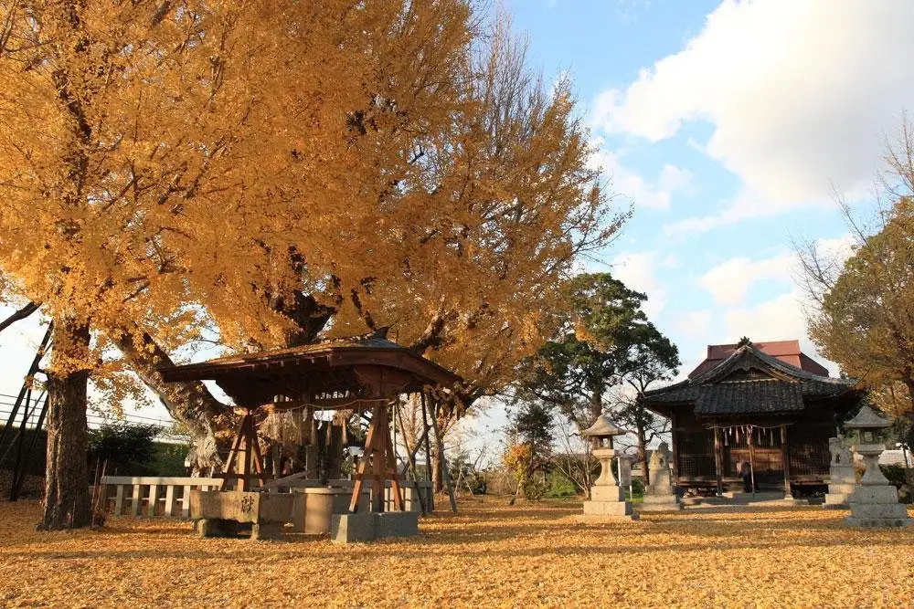
Dining
焼鳥いなかもん
Yakitori Inakamon
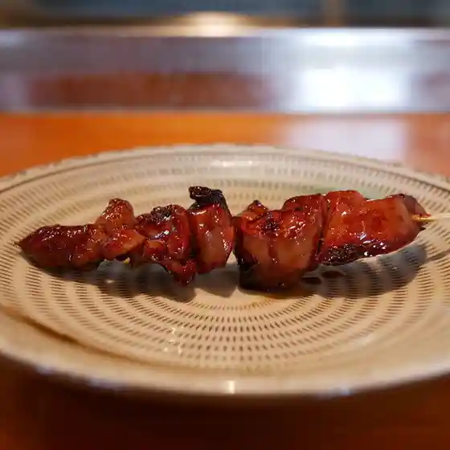
おんどる 本店
Ondoru Honten
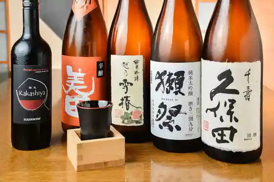
馳走かかしや
Chisou Kakashiya
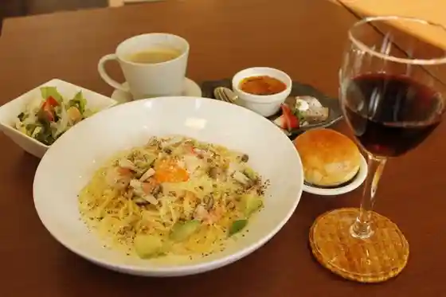
パスタキッチン ドラーゴ
Pasutakitchin Doraago
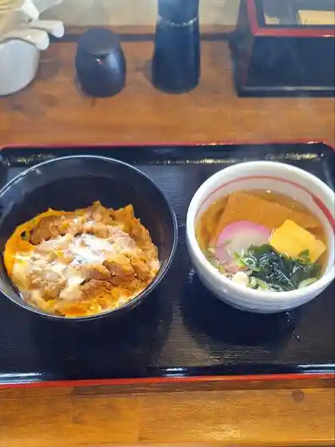
麺屋 一期
Men Ya Ikki
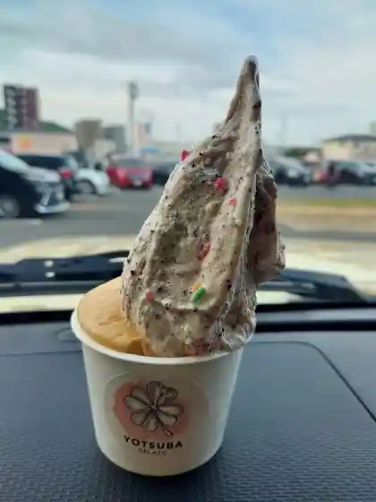
YOTSUBA GELATO
YOTSUBA GELATO
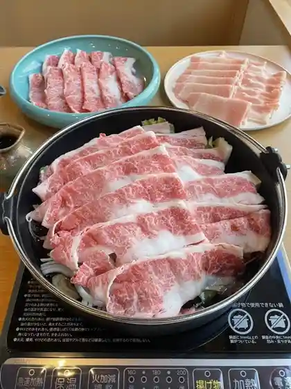
友禅
Yuuzen
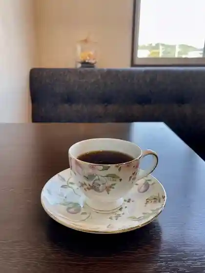
こかげ珈琲
Kokage Koohii
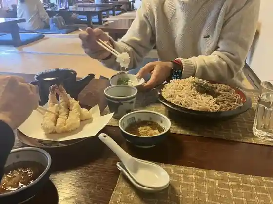
神社そば 村の下
Jinja Soba Mura No Shita
元祖トマトラーメンと辛めんと元祖トマトもつ鍋 三味 遠賀郡水巻みどりんぱーく店
Ganso Tomatoraamen To Karame Nto Ganso Tomato Motsu Nabe Shami Ongagun Mizumaki Midorinpaaku Mise
麺和田や×将軍
Men Wada Ya X Shougun
珍洞
Chin Hora
焼肉 しらかわ
Yakiniku Shirakawa
櫻庵
Sakura Iori
たべった 本店
Tabetta Honten
炭火焼山之口
Sumibi Takiyama Yuki Kuchi
鉄板ダイニング ついてる
Teppan Dainingu Tsuiteru
麦の香り 水巻店
Mugi No Kaori Mizumaki Mise
台湾料理 錦城 水巻店
Taiwan Ryouri Kinjou Mizumaki Mise
ステーキ＆ハンバーグ ムームー
Suteeki & Hanbaagu Muumuu
桜香
Ouka
永昌苑
Eishou En
一力寿司
Ichiriki Sushi
和洋めし よはく
Wayou Meshi Yohaku
鮨 昭和
Sushi Shouwa
飛梅
Tobiume
グリーンコープ 水巻店
Guriinkoopu Mizumaki Mise
黄河 水巻店
Kouga Mizumaki Mise
弥助寿司
Yasuke Sushi
神戸クック・ワールドビュッフェ ライフガーデン水巻店
神戸クック・ワールドビュッフェ ライフガーデン水巻店
豚屋食堂 水巻町店
Buta Ya Shokudo Mizumaki Machi Mise
くれーぷはうす とっと
Kureepuhausu Totto
魚ごころ
Sakana Gokoro
HAN
HAN
珈琲工房 ウインドファーム＋
Koohii Koubou Uindofaamu +
ひまわり
Himawari
火曜日はお休み
Kayoubi Hao Yasumi
宝来軒
Hourai Ken
えきのねき
Ekinoneki
パクパク
Pakupaku
ダイニングバー なごみ
Dainingubaa Nagomi
いえカフェ
Ie Kafe
菓子工房 そぉら
Kashi Koubou Soora
パン工房 穂栄
Pan Koubou Ho Sakae
珈琲所 コメダ珈琲店 ライフガーデン水巻店
Koohii Tokoro Komeda Koohii Mise Raifugaaden Mizumaki Mise
居酒屋 ゆたか
Izakaya Yutaka
祭太鼓
Matsuri Taiko
つばき食堂
Tsubaki Shokudo
さんわ唐揚げ水巻店×ゴリcafe
Sanwa Karaage Mizumaki Mise X Gori Cafe
たかまるうどん
Takamaruudon
izumo屋 開運芋
izumo
キッチン文
Kitchin Bun
からあげとりいち 水巻店
Karaagetoriichi Mizumaki Mise
cafe coba+土曜日
cafe coba
韓FUll
FUll
ATC yabukouji
ATC yabukouji
ラーメンとん太 水巻店
Raamen Ton Ta Mizumaki Mise
ジョイフル 北九州水巻店
Joifuru Kitakyuushuu Mizumaki Mise
東龍軒 水巻店
Touryuu Ken Mizumaki Mise
ドトールコーヒーショップ スーパービバホーム東水巻店
Dotoorukoohiishoppu Suupaabibahoomu Higashi Mizumaki Mise
ワンカルビ 水巻店
Wankarubi Mizumaki Mise
すき家 ライフガーデン水巻店
Suki Ie Raifugaaden Mizumaki Mise
烏龍
Uuron
かど
Kado
ラ・ムー 水巻店
ラ・ムー 水巻店
焼きとりやまぐちくん
Yaki Toriyamaguchikun
政寿し
Masatoshi Shi
農産物直売所 夢工房
Nousanbutsu Chokubai Tokoro Yumekoubou
オーガニック カフェ ウィンドファーム
Ooganikku Kafe Uindofaamu
うまかや
Umakaya
黄色い麦わら帽子
Kiiroi Mugiwara Boushi
ほっともっと 水巻吉田店
Hottomotto Mizumaki Yoshida Mise
ほっともっと 梅ノ木店
Hottomotto Ume No Ki Mise
マックスバリュ 水巻店
Makkusubaryu Mizumaki Mise
宮原製菓
Miyahara Seika
ルミエール 水巻店
Rumieeru Mizumaki Mise
やきとり厨房一徳
Yakitori Chuubou Motonori
ミヨシのパン
Miyoshi No Pan
Heaven's Door cafe&live bar
Heaven&39s Door cafe&live bar
シェ・モア
シェ・モア
暖
Dan
寿楽
Hisashi Raku
cafe 373
cafe 373
味つぼ
Aji Tsubo
やよい
Yayoi
n.o.n
n.o.n
武谷商店
Takeya Shouten
美庵古
Bi Iori Ko
政寿し
Masatoshi Shi
Orto
Orto
YasumiYasumi
YasumiYasumi
ごんちゃん
Gonchan
金剛園
Kongou Sono
スーパーセンター トライアル 東水巻店
Suupaasentaa Toraiaru Higashi Mizumaki Mise
わかば
Wakaba
この道
Kono Michi
子麦お好み焼
Ko Mugi O Konomi Yaki
焼鳥どん
Yakitori Don
福寿し
Fukuju Shi
喜楽
Kiraku
やきとりかっちゃんワネ
Yakitorikatchan Wane
焼肉ワタナベ
Yakiniku Watanabe
からあげ 鳥鳥
Karaage Tori Tori
Pasta Kitchen Drago
Pasta Kitchen Drago
Kobe Cook World Buffet Life Garden Mizumaki
Kobe Cook World Buffet Life Garden Mizumaki
Steak Hamburg Moo Moo
Steak Hamburg Moo Moo
Family Restaurant Tabetta
Family Restaurant Tabetta
Ikusanokimi
Ikusanokimi
Scent of Wheat Mizumaki
Scent of Wheat Mizumaki
Yamagoyatakasu
Yamagoyatakasu
Ramentonta Mizumaki
Ramentonta Mizumaki
Shoya
Shoya
Menkatsu Mizumaki
Menkatsu Mizumaki
Restaurant Chez Moi
Restaurant Chez Moi
Ginjo Mizumaki
Ginjo Mizumaki
Horaiken
Horaiken
Toryuken Mizumaki
Toryuken Mizumaki
Fuku Sushi
Fuku Sushi
Shunsai Ryoori Kayoobi Wa Oyasumi
Shunsai Ryoori Kayoobi Wa Oyasumi
Naniwa Mizumaki
Naniwa Mizumaki
Yakiniku Raiga
Yakiniku Raiga
Sukiya Life Garden Mizumaki
Sukiya Life Garden Mizumaki
Kibarashi
Kibarashi
Eshoen
Eshoen
Kakuuchi Izakaya Kibun
Kakuuchi Izakaya Kibun
Tenshin Ramen Mizumaki
Tenshin Ramen Mizumaki
Masazushi
Masazushi
Heart Dininig Room
Heart Dininig Room
Yukisada
Yukisada
Tamagawa Zushi
Tamagawa Zushi
Crepecafe Laterre
Crepecafe Laterre
Uo Gokoro
Uo Gokoro
Marifaim Lapin
Marifaim Lapin
Takenoko
Takenoko
Nashika Ramenonga
Nashika Ramenonga
Juraku
Juraku
Shinobu
Shinobu
Izakaya Toto
Izakaya Toto
Izakaya Sho
Izakaya Sho
Hanayori Dango
Hanayori Dango
Yakiniku Keishuen
Yakiniku Keishuen
Shino
Shino
Domdom Hamburger Mizumaki
Domdom Hamburger Mizumaki
Nampodon
Nampodon
Karaoke Studio Friends
Karaoke Studio Friends
Abashi Curry Grand Mall Mizumaki
Abashi Curry Grand Mall Mizumaki
Yakinikuzakaya Gyusakura Mizumaki
Yakinikuzakaya Gyusakura Mizumaki
Tuesday Day Off
Tuesday Day Off
Koga
Koga
Sights
Mizumaki Onga Kawa Kasenjiki no Kosumosu Sono
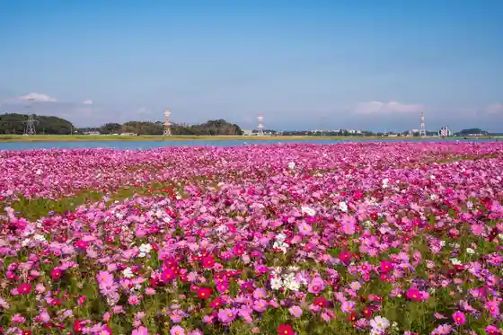
Mizumaki Tennen Onsen Icho Baths
Yatsurugi Shrine
Nosambutsu Chokubai Tokoro Yume Workshop (Mizumaki Machizukuri Yugengaisha)
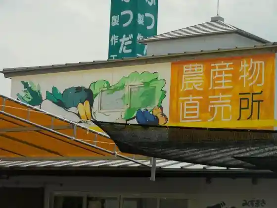
Ritsu Yashiki Iseki
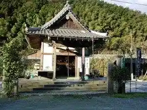
Mizumaki Shuyu Kyoten Shisetsu (ICOTTO!MIZUMAKI)
Yatsurugi Shrine no Oicho
Mizumaki History Museum
Mizumaki no Dekaninniku